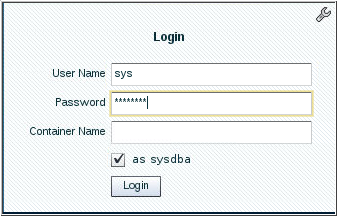
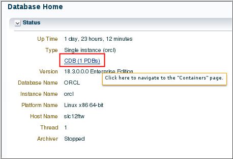
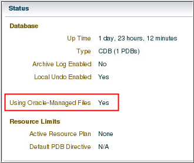

Access
and Configure Container Page for a CDB Using EM Express
Before You Begin
This 10-minute tutorial shows you how to access container page
and configure Oracle managed files for a container database.
Select the Oracle Database release:
Background
An Oracle Database can contain a portable collection of
schemas, schema objects, and nonschema objects that appear to an
Oracle Net client as a separate database. The self-contained
collection is called a PDB. A CDB can include zero or more PDBs.
EM Express enables database administrators to manage a CDB and
its PDBs. Many of the features that EM Express provides for
managing PDBs in a CDB are available on the Containers page of
the CDB in EM Express. EM Express provides the Containers page
for CDBs and for an application root in an application
container. The Containers page is not provided for non-CDBs.
What Do You Need?
Oracle Database 18c19c
Note: Starting with Oracle Database 19c,
Oracle EM Express, the default management option for Oracle
Database, is based on Java JET technology. Currently, only the Performance menu is available in the 19c JET version. Therefore, we
are using the 18c Flash Oracle EM Express in our tutorials. Use the following
command to revert to Flash Oracle EM Express:
SQL> @?/rdbms/admin/execemx emx
To return to 19c JET Oracle EM Express, use the following
command:
SQL> @?/rdbms/admin/execemx omx
The container database (CDB) must be in read/write mode
Access
the Container Page for a CDB
Enter the URL for EM Express for CDB in your browser and log
in as the SYS user with SYSDBA privilege.
 Description of the illustration a1
In the Status section of the Database Home page, click the CDB (n PDBs) link (where n
is the number of PDBs in the CDB) to navigate to the
Containers page for the CDB.
 Description of the illustration a2
Configure
Oracle Managed Files for a CDB
In EM Express, ensure that you are in the Containers page
for the ORCL CDB.
The Configure Oracle-Managed Files wizard appears. Specify
values for these fields in the Configure Oracle-Managed Files
wizard and click OK:
Scope: In this example, both Memory and SPFile are
selected. Selecting Memory changes the value of the
parameter immediately and selecting SPFile retains the
value so that it remains in effect after the database is
restarted.
Deferred: In this example, deferred is not specified, so
that the value of the parameter changes immediately.
Value: The directory you specify will be the destination
of Oracle Managed Files.
Comment: You may optionally enter a comment regarding
the change you made.
The Confirmation box appears stating that the default
directory of the Oracle Managed Files has been set to the
specified location. Click OK.
Description of the illustration b4
Notice that the Status section of the Containers page,
shows the Using Oracle-Managed Files field value as Yes.
 Access
and Configure Container Page for a CDB Using EM Express
Access
and Configure Container Page for a CDB Using EM Express Before You Begin
Before You Begin Access
the Container Page for a CDB
Access
the Container Page for a CDB Configure
Oracle Managed Files for a CDB
Configure
Oracle Managed Files for a CDB